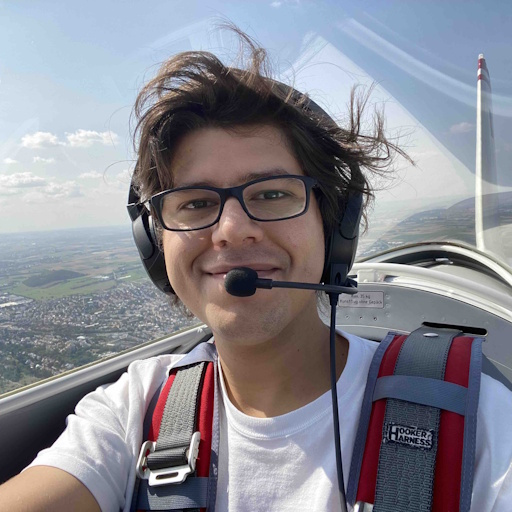

3rd International Workshop on
Diminished Reality
Introducing the 1st DR Challenge 🏆
Description
We are back 👍 The International Workshop on Diminished Reality (IWDR) was previously held at ISMAR 2015 and 2016. At that time, progress in DR research was constrained by several technical challenges that were difficult to overcome before the deep learning era. As a result, the workshop series was discontinued.
However, the landscape has changed dramatically. Recent advances in visual computing, neural rendering, and multimodal perception have made practical DR applications far more feasible than a decade ago [1, 2]. These developments have also enabled deeper investigation into perceptual and cognitive aspects of DR systems [3]. With these shifts, the technical boundaries of DR have expanded substantially, creating a timely opportunity to revive IWDR and foster a new generation of DR research.
References
- [1] S. Mori, O. Erat, W. Broll, H. Saito, D. Schmalstieg, and D. Kalkofen, “InpaintFusion: Incremental RGB-D Inpainting for 3D Scenes,” IEEE TVCG, Vol. 26, Issue 10, pp. 2994–3007, 2020.
- [2] M. Kari and P. Abtahi, “Reality Promises: Virtual-Physical Decoupling Illusions in Mixed Reality via Invisible Mobile Robots,” Proc. ACM UIST, 2025.
- [3] Y. F. Cheng, H. Yin, Y. Yan, J. Gugenheimer, and D. Lindlbauer, “Towards Understanding Diminished Reality,” Proc. ACM CHI, 2025.
Topics: IWDR 2026 aims to bring together researchers working on the full spectrum of DR, from foundational technologies to perceptual studies and domain‑specific applications. Topics include, but are not limited to:
- DR core technologies: Vision- and graphics‑based DR pipelines / Methods for object removal, scene completion, and real‑time inpainting / DR in challenging modalities such as haptics, audio, and multimodal sensor fusion
- DR applications: XR applications leveraging DR in medicine, industrial support, entertainment, and telepresence / DR for safety‑critical or high‑precision environments / DR for accessibility and situational awareness
- Perceptual issues in DR: User performance and task efficiency under DR conditions / Perceptual thresholds, acceptance, and comfort / Cross‑modal perception when DR is applied to visual, auditory, or tactile cues
- Dataset and benchmarking for DR: DR datasets for training and evaluation / Benchmarking methodologies, metrics, and reproducible evaluation pipelines / Standardization
Contribute
We invite contributions through two tracks.
- Short papers (archival): Original research, surveys, demos, or position papers, up to 6 pages excluding references, in the IEEE Computer Society VGTC conference format. Anonymous submissions undergo formal review (two reviews per paper). Accepted papers appear in the ISMAR 2026 Adjunct Proceedings on IEEE Xplore.
- DR challenge (non‑archival): The organizers will provide an implementation platform for WebXR-based DR systems using smartphone camera input. The platform will include fundamental components required for DR implementation, such as AR tracking, 3D scanning, 3D bounding-box detection, and inpainting modules. Participants are encouraged to build their own DR algorithms and applications on this platform and submit a short demonstration video recorded in their own environment (up to 2 min), along with a brief paper in the short papers format (up to 2 pages) summarizing the proposed algorithm and implementation details.
Important dates (provisional, aligned with the ISMAR 2026 workshop track). All deadlines are 23:59:59 AoE (Anywhere on Earth, UTC−12) on the stated day.
- Short paper submission July 5, 2026 July 12, 2026
- Notification of acceptance July 17, 2026
- Camera-ready materials July 31, 2026
- (DR Challenge - ON-SITE) Demonstration video and description submission September 4, 2026
- (DR Challenge - ON-SITE) Notification of invitation September 18, 2026
- (DR Challenge - ONLINE) Demonstration video and description submission September 27, 2026
- Workshop October 5 or 6, 2026 (Bari, Italy / hybrid)
DR Challenge
We plan to organize a hands‑on DR Challenge.
- Starter Code: A mobile DR framework that separates heavy DNN‑based server processing from lightweight AR functions running on mobile devices.
- Challenge Tasks: Develop improved DR algorithms, pipelines, applications, or benchmarking schemes. Discuss practical limitations of current DNN‑based DR, including latency, robustness, perceptual quality, and user experience.
- Presentation Styles: Bring their systems to the workshop venue for ON-SITE demonstrations (Deadline: September 4), or otherwise present them ONLINE via pre-recorded videos (Deadline: September 27).
The challenge is designed to stimulate discussion on emerging technical bottlenecks and encourage reproducible experimentation in DR. Fill out the form and download the starter code!!
Keynote Speaker

TitleReality Interfaces: Rebuilding Reality in Real-Time
Dr. Mohamed Kari is a researcher at the FieldAI Research Institute whose work bridges interactive, real-time 3D graphics and vision systems for scene-aware augmented reality and robotics applications.
Program
IWDR 2026 is a half-day, hybrid workshop. We deliberately move away from a "mini-conference" format — roughly half the time is reserved for interactive activity rather than paper presentations. Indicative agenda (subject to change):
-
14:00-14:15Opening (15 min)
-
14:15-15:00Keynote (45 min)
Abstract
Computers moved from the basement onto the user’s desk, into their pocket, around their wrist, and in front of their eyes. Not only did they physically converge to the user’s space of action, but the increasing integration of sensors and displays provides them with unprecedented access to the user’s senses and their environment, promising to evolve computers into comprehensive reality interfaces through which the user perceives and interacts with the world around. In this talk, I will introduce reality interfaces as computers situated between objective and subjective reality, and that build a representation of reality to then reprocess and present it as needed for user-desired interactions. I will discuss how to design and build interactive reality interfaces that leverage geometric, photometric, semantic, and pragmatic awareness of the user’s environment for engaging situated interactions and experiences beyond single-object augmentations.
-
15:00-15:30Short Paper Talk × 2 (15 min per talk)Session Chair: Hideo Saito01Multimodal Diminished Reality for Robotics
Abstract
Diminished Reality (DR) is an emerging paradigm within the Extended Reality (XR) spectrum that enables the selective removal and inpainting of "objects of disinterest" from the user’s environment. While traditional robotics research prioritizes maximizing information gain, a critical research gap exists in managing the cognitive load of operators in complex, cluttered, and perceptually demanding scenarios. This work addresses this gap by formalizing a multimodal Diminished Reality for Robotics (DR-R) framework, shifting the focus from "perceiving more" to "perceiving less". We introduce a unified approach comprising three sensory cues: visual, audio, and haptic. To evaluate this framework, we conducted a structured experimental protocol (N=41) across five modalities: visual wire removal, visual suppression of simulated blood, single-channel speech extraction via SepFormer, and haptic substitution for environmental light cues in a robotic lizard. Quantitative results reveal that Audio (M=5.91/7) and Haptic (M=5.39/7) diminished cues were the most effective, scoring 24.6% and 13.7% higher, respectively, than the average of the visual modalities (M_visual_avg=4.56/7). Furthermore, the unified multimodal scene achieved a high preference rating (M=4.90/7), with participants reporting significantly enhanced scene interpretability and reduced sensory clutter. Our findings suggest that multimodal DR-R effectively mitigates sensory overload, offering a vital complementary principle to traditional robotic perception.
02Perceive More By Seeing Less: Vision Augmentation SystemsAbstract
We present “Perceive More By Seeing Less,” a creative research project and diminished reality experience that explores methods for improving visual acuity using mixed reality (MR/AR/VR/XR) pass-through technology. Working with a transdisciplinary team, we designed five real-time spatial frequency filters that suppress or enhance specific bands of visual information, a perceptual form of diminished reality (DR) in which selectively removing detail, rather than adding virtual content, reshapes how users perceive objects, spatial relations, and environments. Motivated by vision rehabilitation research on children recovering from treatable blindness, the system reframes deprivation-based rehabilitation as a creative DR tool and demonstrates the paradoxical potential of diminished reality to enhance human perception. This paper discusses the theoretical foundation, implementation, and implications for sensory, creative, and vision rehabilitation-oriented diminished reality research.
-
15:30-16:15☕ Coffee break (45 min)
-
16:15-16:30Short Paper Talk × 1 (15 min)Session Chair: Shohei Mori03DR.Adapt: Context-Aware Adaptive Diminished Reality via VLM Reasoning
Abstract
Previous DR systems rely on manually defined rules or fixed object elimination, limiting their ability to adapt to the changing activities and surrounding contexts. In this paper, we present DR.Adapt, an adaptive diminished reality framework that incorporates vision-language reasoning to automatically determine which objects should be visually suppressed based on the user's ongoing task. Our approach combines egocentric scene perception, semantic task inference, and adaptive rendering to estimate the relevance of surrounding objects and adjust their visibility accordingly. To demonstrate the feasibility of this idea, we implement a proof-of-concept prototype featuring two adaptive rendering strategies and evaluate it in representative scenarios. DR.Adapt is designed as an AI-driven interactive agent that responds to users' intentions and evolving environments. We hope this work will inspire future research on intelligent, personalized, and context-aware visual assistance in mixed reality.
-
16:30-16:45DR Challenge Introduction (15 min)
-
16:45-17:00DR Challenge Demonstrations and Talks (15 min)Weida Cheng (Ritsumeikan University)
-
17:00-17:35Panel Discussion (35 min)
 Mohamed Kari, Ruofan Liu, Hideo Saito, Shohei Mori (+ participants)
Mohamed Kari, Ruofan Liu, Hideo Saito, Shohei Mori (+ participants) -
17:35-17:45Closing - Group Photo (10 min)
Panel Discussion
Organizers
Program Committee
Acknowledgement
The Microsoft CMT service was used for managing the peer-reviewing process for this conference. This service was provided for free by Microsoft and they bore all expenses, including costs for Azure cloud services as well as for software development and support.